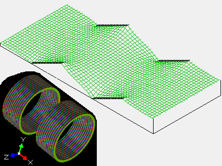

Purpose
This example demonstrates how to create potential arrays with continuous voltage gradients on electrode surfaces (e.g. resistive electrodes). See Doc(resistive_electrodes) for background on various techniques for handling resistive electrodes.

Figure: 3D and potential energy views of lens_pa_build.lua. Observe continous gradient along electrode voltages.
Files in this Demo
- README.html - description of this example.
- lens_pa_build.lua - Generates lens.pa (basic array) with resistive electrodes.
- lens_pa0_build.lua - Generates lens.pa0 (fast adjustable array) with resistive electrodes.
- lens1.gem - Generates lens1.pa. This is the same as lens.pa but is entirely a GEM file, which doesn't need a batch mode Lua code.
Usage
- Using lens_pa_build.lua: This example builds a basic potential array with resistive electrodes. Click Run Lua Program and select "lens_pa_build.lua". The lens.pa file will be built and refined. You can examine this file in Modify and View screens (particular PE view).
- Using lens_pa0_build.lua: This example is similar to the previous one but the array is fast adjustable, and it is a little more complicated to build. Click Run Lua Program and select "lens_pa0_build.lua". The lens.pa0 file will be built and refined. You can examine this file in Modify and View screens (particular PE view). Unlike in the previous example, the two resistive electrodes are independently fast adjustable. While in PE view, try different voltages via the Fast Adjust Voltages button on the PA's tab.
- Using lens1.gem: This example is similar to lens_pa_build.lua, but the voltage gradient is defined with some special macros in the GEM file rather than resorting to a batch mode program. This technique presently cannot be used for fast adjustable electrodes (but may be used for fast scalable electrodes in a fast adjustable array). Convert lens1.gem to lens1.pa and refine it. (Click Remove All PAs from RAM. Click Modify. Click Use Geometry File and select lens1.gem. Click OK to return back to the main screen. Click Refine and OK to refine it.)
Examine the .lua and .gem files in a text editor for details on how these work. You may need to consult the Doc(simion.pas) (SIMION PA's API) and Doc(GEM) (notes on GEM macros)
Discussion
In these examples, a PA if first created with electrodes have constant voltages. The Lua program that rewrites those electrode voltages with a gradient (Note: GEM files don't yet easily support voltage gradients.) Then it is refined. Additional care is needed when using fast adjustable (.pa#/pa0) arrays rather than basic arrays (.pa) since the electrode solution arrays (.pa1, .pa2, etc.) need to be individually edited. See Doc(potential_array_types) for notes on what electrode solutions arrays are.
See Also
- Doc(resistive_electrodes) - notes on resistive electrode simulation in SIMION.
- Doc(simion.pas) - SIMION PA's API
- Doc(dielectric) - SIMION dielectric Refining capabilities
- Doc(current_density) - SIMION current density solving capabilities
- Example(dielectric) - resistive_2dp.iob (uses dielectric solver)
- Example(tof) has a reflecton (mirror.pa) with a continuous voltage gradient across it. This mirror.pa was not created with Lua code but rather via some tricks with the Modify and Refine screens, as described in Doc(resistive_electrodes).
History/Changes
- 2012-09 - D.Manura